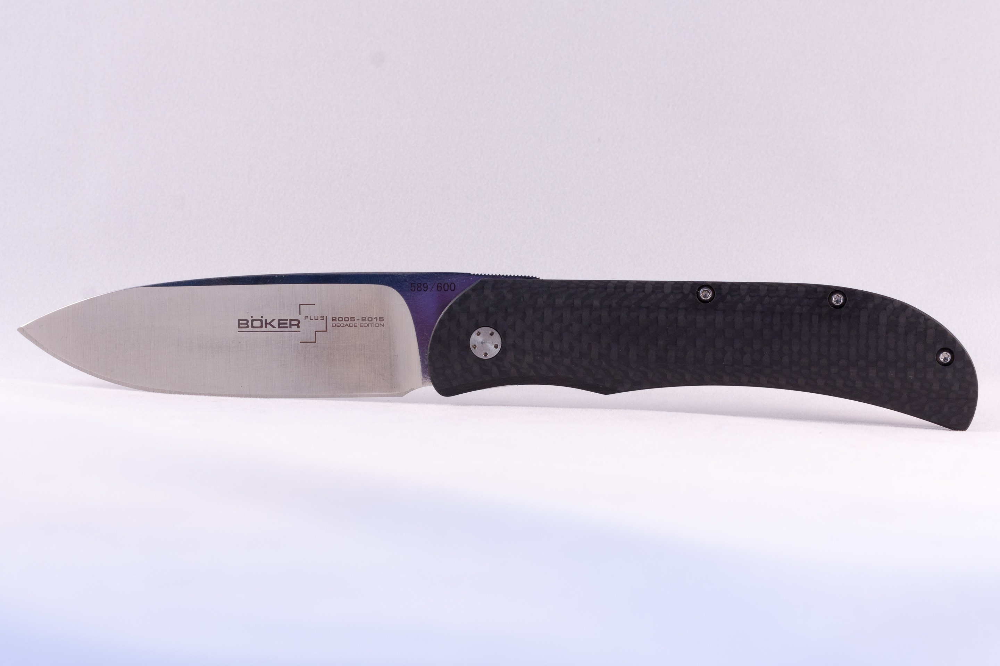
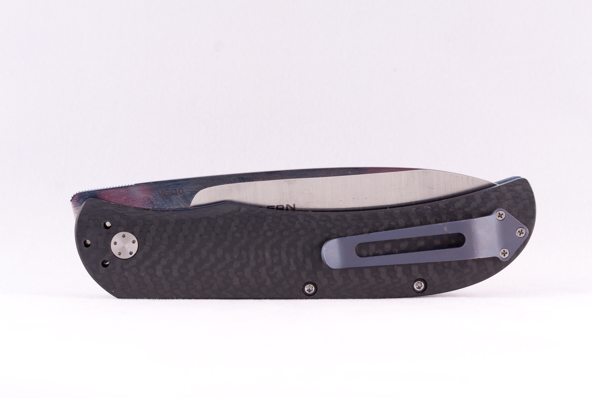

Boker Plus Exskelibur


This model is based on the Exskelibur I, a collaborative custom design of Mike Skellern and Fred Burger. It has carbon fiber scales and a premium VG-10 stainless steel blade, marked for the 10th Anniversary. The Exskelibur is a true gentleman's knife with a slim everyday carry design and quality features like the blue anodized titanium liner and contoured scales.
- Designers: Mike Skellern and Fred Burger
- Mechanism: Liner Lock
- Action: Manual-opening
- Blade Length: 3.5"
- Blade Thickness: 0.11" (3mm)
- Open Length: 8.0"
- Closed Length: 4.5"
- Carbon Fiber Handles
- Blade Steel: VG-10
- Weight: 3.22oz
Product ID: exskelibur
*Information courtesy of Boker Plus Knives.